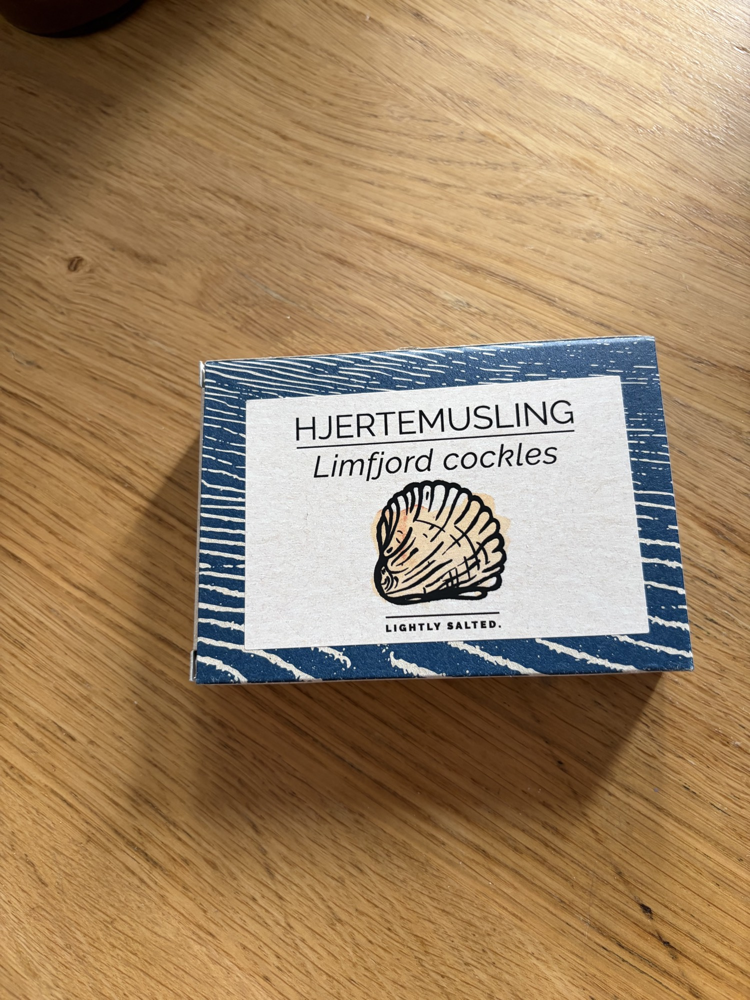

Fangst — сердцевидки Лимфьорда
Датские сердцевидки из Лимфьорда, слегка подсоленные. Сладко-солёное совершенство.
Fangst Limfjord Cockles (Hjertemusling) – Легко посоленные
Что это такое
Лимфьорд, узкий пролив, прорезающий Ютландию на севере Дании, производит лучшие сердцевидные мидии (Cerastoderma edule) в Скандинавии. Fangst консервирует их вручную в сезон пика, упаковывая в собственный сок с легким посолом — без уксуса, без дыма, без масла. Мидии готовятся сразу после сбора, поэтому мясо сохраняет свою свежую сладость без резкого отскока переваренных моллюсков. Жидкость в банке — это бульон, слегка мутный от белков раковин и морских минералов. Качество: целые раковины (если присутствуют), пухлое, слоново-розовое мясо без сернистого оттенка и жидкость, которая пахнет чистым морем, а не отливом.
Пищевая ценность
Типичная порция 80–100 г отцеженного мяса (примерно половина банки 115 г) содержит примерно 90–110 ккал, 14–16 г белка, 1–2 г жира и незначительное количество углеводов. Это постные, минералонасыщенные моллюски: богаты железом (около 15–20% DV), цинком, витамином B12 (очень высоко, 500%+ DV на 100 г) и умеренным селеном. Содержание омега-3 присутствует, но умеренное по сравнению с жирной рыбой — ожидайте примерно 200–400 мг EPA/DHA в 100 г. Жидкость содержит растворенные микроэлементы и некоторые свободные аминокислоты (глутамат, глицин), что делает ее ценным активом на кухне.
Подготовка и подача
Подавайте прохладными, но не ледяными — 8–12°C — это идеальная температура, при которой сладость мяса раскрывается, не позволяя аромату банки стать заметным. Слейте мидии из жидкости, но сохраните каждую каплю этой жидкости. Процедите ее через мелкое муслиновое или кофейное фильтры; это ваша основа для винегрета, beurre blanc или быстрого рыбного бульона. Промойте мидии только в том случае, если вы обнаружите песок; в противном случае легкая соленость является частью задуманного вкуса. Не нагревайте их сильно — мясо уже приготовлено и станет жестким при температуре выше 50°C. Если добавляете в теплое блюдо, добавьте в самую последнюю минуту и дайте остаточному теплу сделать свою работу.
Подача: Разложите 4–5 мидий на порцию в неглубокой охлажденной тарелке. Ложкой добавьте немного процеженной жидкости вокруг них, слегка приправленной хорошим датским рапсовым маслом и свежемолотым белым перцем. Небольшая порция тонко нарезанного сырого фенхеля или нарезанного зеленого яблока добавляет контраст.
Чего НЕЛЬЗЯ делать: Не выбрасывайте жидкость. Не подавайте прямо из холодильника при 4°C — холод подавляет сладость и усиливает металлические нотки. Не сочетайте с тяжелым чесноком или томатом; эти мидии слишком деликатны.
Традиционный и современный контекст употребления
В Дании их едят просто: отцеженные, приправленные лимоном и маслом, на ржаном хлебе или как начинку для смёрребрёд с ремоладой и свежими травами. Для VIP-клиента поднимите это до уровня холодного закуски или интермеццо между рыбными и мясными блюдами. Рассмотрите это как составной салат с тонко нарезанным кольраби, укропным маслом и небольшим количеством хрена. Это также прекрасно работает как гарнир на морском плато, соединяя сырые и копченые приготовления.
Вкус и текстура
Мясо нежное и упругое, легко поддающееся укусу без жевательности. Вкус сладковато-соленый, ближе к моллюску, чем к мидии, но с более чистым, менее земляным финишем. Жидкость имеет легкую йодисто-минеральную глубину и легкий намек на богатство глутамата. Нет дыма, нет кислоты, нет жирового вмешательства — только дистиллированная суть Лимфьорда.
Сочетания и состав
- Хлеб: Плотный датский rugbrød (ржаной хлеб на закваске), тонко нарезанный и слегка намазанный маслом; или нежный тост из бриоши для контраста.
- Овощи: Сырой фенхель, зеленое яблоко, ремулад из корня сельдерея, маринованный огурец (мягкий), свежий укроп, шервиль.
- Соусы: Процеженная жидкость, эмульгированная с холодным рапсовым маслом и каплей уксуса; хреновая сметана, разбавленная crème fraîche.
- Вина: Chablis или легкий Muscadet; для чего-то более авантюрного — охлажденный Manzanilla sherry.
- Идея блюда: Smørrebrød Limfjord — тонкая ржаная основа, слой размягченного масла, мидии, выложенные в линию, точки укропного масла, нарезанный хрен и мелко нарезанные ферментированные зеленые помидоры для кислотности.